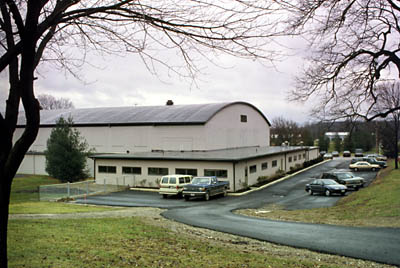

Kenyon College
Bishop Philander Chase established Kenyon College on a hilltop overlooking the scenic Kokosing River Valley in 1825. The first permanent building--now known as "Old Kenyon"--went up in 1827-29. Over the years it grew into a respected liberal arts college, and today remains among Ohio's top schools. Famous Kenyon alumni include novelists E. L. Doctorow and Caleb Carr, The West Wing actress Allison Janney, Pulitzer Prize-winning poets Robert Lowell and James Wright, Chief Justice of the Supreme Court William H. Rehnquist and Justice David Davis, comedian Jonathan Winters, movie star Paul Newman, and 19th President of the United States Rutherford B. Hayes.
Kenyon is also very much a haunted place. It's a tough call between it and Ohio University for Most Haunted Ohio College (my vote goes to OU--just barely). A large number of supernatural entities roam the buildings and grounds of Kenyon's attractive campus in Gambier, Knox County. You can read about a few of them below.
Campus Gates - Gates of Hell
The main gates on Kenyon's Main Path are said to have been built atop the "Hellmouth." Some also believe that the Church of the Holy Spirit or Manning Hall stand atop the gate to the underworld. But superstitious Kenyon students who pass between the old pillars never do so without touching one as they pass, or else they'll end up in hell, I guess.
Norton Hall
A peripatetic "ghostly insomniac" walks the corridors of Norton Hall, which is a residence building located at 206 Ward Street. He was a student before he committed suicide in his dorm room.
Manning Hall
A frustrated student who died before she could attend classes rearranges furniture in this building at 202 South College Road.
Lewis Hall
A freshman who hanged himself in the attic of this building (202 Ward Street) turns lights on and off and flushes toilets, as well as disturbing students by knocking on doors.
Shaffer Pool Building - Bolton Dance Studio

Now the Bolton Dance Studio, this building used to be primarily the home of the Kenyon swimming pool. According to legend, a student using the high diving board cracked his or her head on the glass ceiling, broke his or her neck, and fell into the pool to drown. According to the records, no one ever died like this in the Shaffer Pool Building, so perhaps the legend has gotten twisted in some way--but the ghost, whoever it is, continues to haunt the building.
When the pool was still used, swimmers would hear a voice call out to them when no one was there. Lifeguards would sometimes rush to help someone thrashing in the water, only to find the pool empty and undisturbed.
The Bolton Dance Studio has been plagued by eerie incidences as well. Wet footprints appear, leading into the old locker room or up to walls which they seem to go right through. Ghostly hands turn the showers on and off at all hours of the night. Splashing sounds are still heard in the bone-dry dance studio, and sometimes a small white face, hair slicked back, is seen peeking out through a window at passersby on campus. A school tradition has the forgotten pool in the basement visited just once a year, by the swim team, before the yearly championship meet. They are supposed to commune with the dead swimmer.
Shaffer Speech Building - Hill Theater
The Hill Theater, located inside the Shaffer Speech Building, was supposedly built on or near the site of a drunk driving fatality. The ghost or ghosts associated with the accident unscrew light bulbs and open curtains when no one is around. Guards have experienced these phenomena after hours. They've also been known to encounter the spirit of someone (a stagehand, perhaps) who fell from the catwalk and died; the sound of his body thumping against the backstage is still heard.
Wertheimer Fieldhouse

A ghost runs the track at the Wertheimer Fieldhouse; he is often heard by guards at night, keeping in shape from beyond the grave. He once scared a student by opening a door and playing some music in the supplies cage. The fieldhouse itself has an odd history, having been donated to the college by the US Navy in 1948 after it was used as half of a military drill hall during the Second World War. It was shipped to Gambier on a train. Perhaps the ghost dates back to that time in the building's past.
Caples Hall
The ghost of a student who died in the elevator shaft bothers girls in Caples Hall. One story is that he was pushed; another is that he fell when he deliberately climbed into the shaft as part of some sort of prank. Either way, his spirit hangs around, appearing mostly to girls--perhaps out of animosity toward his girlfriend, who he was there to visit when he died. The original girlfriend later felt icy hands on her face in her sleep and found her door blocked by her dresser on different occasions. It seems their last argument--the one that led to his death--ended when she shoved her bureau against the door so he couldn't get in. Ever since then he appears, transparent, leaning against female students' furniture, pushes dressers against dorm room doors, and sometimes tries to harm the girls. On at least one occasion he may have tried to smother a female student with her pillow. Watch out for this one.
Delta Kappa Epsilon
In 1905 Stuart Pierson was killed while pledging to this fraternity; he was struck by a train as he waited on a trestle over the Kokosing River. Whether or not a train was expected is not certain; there was some sort of miscalculation of the risk involved, and Stuart was killed before his pledge to DKE was ever completed. His father, also a DKE, was coming to town the next day to witness his son being inducted; when he found out about the accident, he refused to press charges, adapting instead a "boys will be boys" attitude which might have served to incense Stuart's ghost. Every year on October 28, that ghost is said to stare out of a window as the train passes. Whoever occupies his old room is made to vacate the room on this anniversary, so Stuart can reclaim it for one day. Confined to the fourth floor, he opens and closes windows and causes footsteps overhead--despite the fact that there is no floor higher than the fourth. Now that the railroad has been converted into a bike trail, you have to wonder if he continues his yearly vigil.
Old Kenyon
The most tragic event in the history of Kenyon College spawned its darkest and most enduring ghost story: the devastating fire at Old Kenyon on February 27, 1949.
Nine male students were killed in the blaze, which leveled the school's oldest and most prominent building. When it was rebuilt the following year using fireproof materials, students were moved back in. They immediately began to see and experience strange, even terrifying things. The spirits of the nine fire victims are seen gliding down the halls of Old Kenyon, visible only from the knees up because the foundation of the rebuilt dorm is roughly ten inches higher than the old was; some have reported seeing the transparent legs of the ghosts hanging through the ceiling of a lower floor. They flip lights on and off and flush toilets. Scenes of panic are reenacted in rooms where the students were trapped; cries of "get me out of here!" are heard, as is the violent shaking of closed doors. They awaken students at night by shouting "Wake up, FIRE!"
1949 yearbooks are sometimes found open to the page with the names of the nine victims of the Old Kenyon fire, a candle burning nearby. Although the building was restored, the lives of the young men never were, and their spirits still haunt the place where those lives came to an end.
Kenyon College Cemetery
Not necessarily haunted, but creepy and interesting nonetheless. Click below to take a look at the section on Kenyon's very old campus cemetery.

Do you want to learn more? Looking to find cheap ways to learn
english - learn spanish? At EricAE you can find great ways to get yourself english
lessons that can really expand your mind! Find all of your grants
for education information at EricAE. Find what you are looking for today!
All at EricAE! Visit as soon as possible!

Kenyon.edu
Kenyon College Cemetery
Back
{kind=link}
{kind=link}
{kind=link}
{kind=link}
{kind=link}
{kind=link}
{kind=link}
{kind=link}